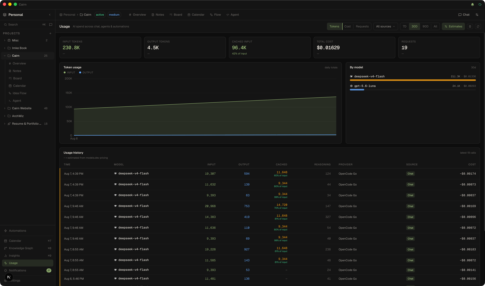

Usage
A local, always-on record of every LLM and agent call — tokens, cost, and request volume across chat, the Cairn Agent, subagents, automations, and the one-shot AI features. Nothing leaves your machine.

Opening Usage
Click Usage in the sidebar, right below Insights. The view is workspace-level (not per-project) and records everything locally, on every call.
What's tracked
Every request that hits a model is recorded with its input, output, and reasoning tokens, the model id, your saved provider's name, and cost where available:
- Chat — messages in the AI chat panel
- Agent — the Cairn Agent (pi-agent) loop
- Chat subagent / Agent subagent — dispatched research and write agents
- Automation — scheduled automation runs
- One-shot AI — PRDs, commit messages, PR descriptions, explain-code, Idea Flow summaries, compaction, and the AI Tool Builder
Use the source filter dropdown in the toolbar to narrow to any single surface.
Toolbar & ranges
- Stat cards — input tokens, output tokens, cached input (with % of input), total cost, and request count for the selected range, each with a delta vs. the previous period.
- Chart — daily totals with a Tokens / Cost / Requests toggle. The token view overlays input and output, with a hover breakdown.
- By model — where spend is going, with each model's provider logo, proportional bar, and cost.
- History table — every recent call: exact time, model (with logo), input / output / reasoning tokens, provider, source, and cost.
- Range — 7D / 30D / 90D / All.
- Estimates toggle — on by default. Hides only the estimated dollar figures (shown as
—); all calls and token stats stay visible.
How cost is shown
Cost is shown whenever the provider reports it (e.g. NeuralWatt's energy accounting, or credit balances recovered from your account), and otherwise estimated from models.dev pricing — estimated figures are marked with a ~ and can be filtered out with the Estimates toggle. Estimates are cache-aware: cached input is priced at the model's cache-read/write rates rather than full input, so cache hits aren't over-billed. Costs are always shown in USD. The total reflects only provider-reported cost; estimated totals are not mixed in.
Prompt cache
The Usage view tracks prompt caching across every surface. A Cached input stat shows cached tokens and the percentage of input that hit the cache, and the history table has a Cached column per call. Cache-hit percentages are colour-coded — grey (no cache) → amber → accent → green as the rate rises (≥50% is green) — so you can see at a glance how much of your prompt spend caching is saving.
Clearing recorded usage
Use the trash button in the toolbar to wipe the token/cost/request history for the current workspace. It asks for a second click to confirm (styled tooltips explain each toolbar action) — useful for a fresh month or before handing a device over. The underlying database also auto-vacuums, so heavy use never leaves the file stuck at a large high-water mark.
Insights analyses your project data — task activity, due dates, tag co-occurrence. Usage analyses your AI spend — tokens, cost, and calls. Both sit in the sidebar and both are entirely local.